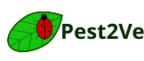

Home
Pest Gallery
Identify a Pest
About
← Back to Pest Gallery
Signs and damage
Where to look
Management and prevention
Research source
This information is educational and should not be treated as a definitive diagnosis.